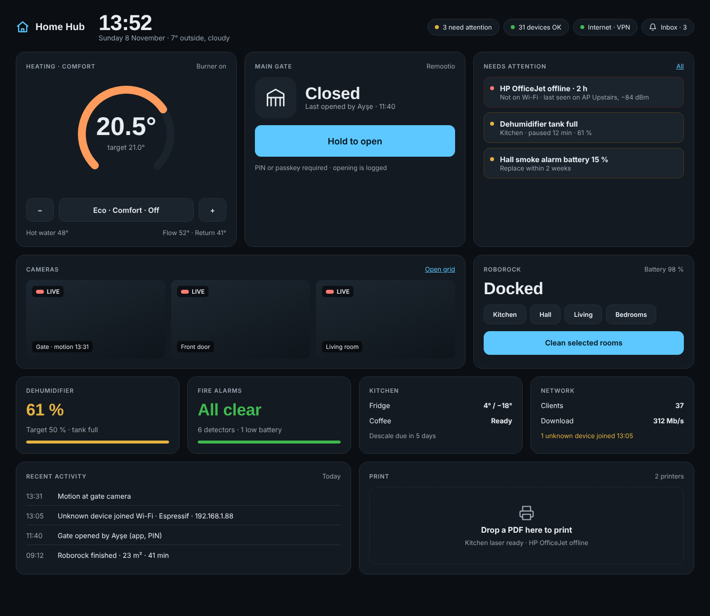

One dashboard for every device in the house
A self-hosted home platform with a Java backend and a modern browser UI. It brings the gate, heating, fire alarms, dehumidifier, robot vacuum, printers, cameras, network, fridge and coffee machine onto one clean dashboard. Device health and notifications are first-class features.
1Vision & scope
Home Hub is not a Home Assistant clone. Home Assistant has a decade of community integrations, and matching it is not the goal. Instead, Home Hub does a smaller set of things very well, for the devices this household actually owns. Its architecture still lets it grow through open standards.
Out of scope for v1.0
- Feature parity with Home Assistant, native mobile apps (a PWA is used instead), multi-home SaaS, and NVR video recording.
- Being the primary fire alarm. The detectors and the official app stay primary, and the hub is a second channel.
2Principles & technology
| Principle | What it means |
|---|---|
| One internal language | Every vendor protocol is translated at the edge into Device → Capability → State / Command / Event. The core, UI and rules never see a vendor protocol. |
| Drivers are plug-ins | A driver runs in-process (Java SPI) or out-of-process (a sidecar container speaking MQTT). This lets us reuse mature community libraries. |
| Health is computed | Derived from heartbeats, last-seen times, fault codes and connectivity, rather than trusting vendors to report problems. |
| Budgets for cloud APIs | Rate limits (e.g. ViCare: 1,450 calls/day) are enforced centrally, with a reserve kept for user commands. |
| Secure by default | Vault-encrypted secrets, step-up confirmation for opening the gate, no port forwarding. |
| Boring core, exciting edges | Proven technology in the core; the innovation goes into the drivers and the user experience. |
| Layer | Choice |
|---|---|
| Backend | Java 25 (virtual threads), Spring Boot 4, Maven multi-module (a modular monolith) |
| Data | PostgreSQL 17 + TimescaleDB (registry, state, time-series history), Flyway |
| Messaging | Typed in-process event bus; Eclipse Mosquitto (MQTT 5) at the edge for sidecars and MQTT devices |
| API | REST (OpenAPI 3) + WebSocket/STOMP for live updates |
| Frontend | React 19 + TypeScript + Vite, Tailwind + shadcn/ui, TanStack Query, ECharts; installable PWA |
| Media & printing | go2rtc (RTSP → WebRTC), IPP Everywhere (+ optional CUPS) |
| Delivery | Docker images (Jib), Docker Compose, Caddy (TLS), GitHub Actions |
3System context
Who and what Home Hub talks to. Local devices are reached directly on the LAN; cloud-only devices go through vendor APIs. Remote access goes through the existing VPN router.
flowchart LR
classDef person fill:#1f6feb,stroke:#0b3d91,color:#fff
classDef system fill:#2da44e,stroke:#116329,color:#fff
classDef ext fill:#6e7781,stroke:#424a53,color:#fff
classDef dev fill:#bf8700,stroke:#7d4e00,color:#fff
U(["👤 Household user<br/>(browser / PWA)"]):::person
HUB["🏠 Home Hub<br/>Java backend + Web UI<br/>(Docker host on LAN)"]:::system
subgraph LAN["Home LAN devices"]
direction TB
D1["Remootio gate"]:::dev
D2["ProBreeze dehumidifier (Tuya)"]:::dev
D3["Roborock vacuum"]:::dev
D4["Printers (IPP)"]:::dev
D5["IP cameras (RTSP/ONVIF)"]:::dev
D6["Routers / VPN router / clients"]:::dev
D7["X-Sense SBS50 (local MQTT)"]:::dev
end
subgraph CLOUD["Vendor clouds"]
direction TB
C1["Viessmann API (ViCare)"]:::ext
C2["X-Sense cloud (fallback)"]:::ext
C3["Fridge / coffee vendor cloud ⚠️"]:::ext
C4["Roborock cloud (fallback)"]:::ext
end
N["📣 Notification channels<br/>Web Push · ntfy · Email"]:::ext
VPN["🔐 VPN router<br/>(remote access)"]:::ext
U -- "HTTPS / WSS" --> HUB
U -. "remote via VPN" .-> VPN -.-> HUB
HUB -- "local protocols" --> LAN
HUB -- "HTTPS / MQTT" --> CLOUD
HUB -- "push" --> N --> U
4Component architecture
Five layers inside one Spring Boot application, plus infrastructure containers. Commands flow down to the drivers; state and events flow up through the event bus to the subscribers and out to the browser.
flowchart TB
classDef ui fill:#1f6feb,stroke:#0b3d91,color:#fff
classDef api fill:#8250df,stroke:#512a97,color:#fff
classDef core fill:#2da44e,stroke:#116329,color:#fff
classDef bus fill:#116329,stroke:#0a3d1a,color:#fff
classDef drv fill:#bf8700,stroke:#7d4e00,color:#fff
classDef infra fill:#6e7781,stroke:#424a53,color:#fff
classDef ext fill:#ffffff,stroke:#6e7781,color:#24292f,stroke-dasharray: 4 3
UI["🖥️ Web UI · React PWA"]:::ui
subgraph APP["hub-app · Spring Boot"]
direction TB
subgraph EDGE["① API layer"]
direction LR
REST["REST API<br/>OpenAPI"]:::api
WS["WebSocket<br/>STOMP live channel"]:::api
AUTH["Security<br/>AuthN · AuthZ · 2FA"]:::api
end
subgraph SVC["② Core services: request side"]
direction LR
REG["Device<br/>Registry"]:::core
CMD["Command<br/>Service"]:::core
MEDIA["Media<br/>Service"]:::core
DISC["Discovery<br/>Service"]:::core
end
BUS(("③ Internal<br/>Event Bus")):::bus
subgraph SUBS["④ Core services: event subscribers"]
direction LR
STATE["State<br/>Store"]:::core
HEALTH["Health<br/>Monitor"]:::core
NOTIF["Notification<br/>Engine"]:::core
HIST["History<br/>Service"]:::core
RULES["Rules<br/>Engine"]:::core
end
subgraph DRV["⑤ Driver layer"]
direction LR
DM["Driver Manager<br/>+ Vault + Rate Budgets"]:::drv
INP["In-process drivers<br/>Remootio · ViCare · Tuya · IPP<br/>ONVIF · Network · MQTT-Discovery"]:::drv
BR["Sidecar<br/>Bridge"]:::drv
end
end
subgraph INFRA["Infrastructure containers"]
direction LR
PG[("PostgreSQL<br/>+ TimescaleDB")]:::infra
MQ[["Mosquitto<br/>MQTT 5"]]:::infra
G2R["go2rtc"]:::infra
SC["Sidecar drivers<br/>Roborock · X-Sense (cloud)"]:::drv
end
DEV["📡 Devices & vendor clouds"]:::ext
UI <==> EDGE
EDGE ==> SVC
SVC == "commands" ==> DM
DM --> INP & BR
INP <==> DEV
INP == "state · events" ==> BUS
BR == "state · events" ==> BUS
BUS ==> SUBS
SUBS -. "live push" .-> WS
BR <--> MQ <--> SC
SC <--> DEV
MEDIA --> G2R
SUBS --> PG
| Component | Responsibility |
|---|---|
| API layer | REST for queries and commands; WebSocket for live state, events and notifications; authentication, roles, 2FA and step-up |
| Device Registry · Command Service | Devices, rooms and capabilities; validates, confirms, dispatches and tracks commands (PENDING → SENT → CONFIRMED / FAILED / TIMEOUT) |
| Event Bus | Typed in-process pub/sub with per-device ordering and isolated subscribers on virtual threads |
| State · Health · Notifications · History · Rules | Current-state projection; health and incidents; notification inbox and channels; TimescaleDB history; simple automations |
| Driver layer | Driver Manager (lifecycle, supervision, back-off restarts), Credential Vault, Rate-Budget Manager, in-process drivers, Sidecar Bridge |
| Media & Discovery | Camera sessions through go2rtc, print jobs; mDNS / SSDP / ONVIF / ARP discovery for onboarding |
flowchart LR
classDef m fill:#f6f8fa,stroke:#57606a,color:#24292f
classDef d fill:#fff8c5,stroke:#9a6700,color:#24292f
API["hub-domain<br/>(records, capabilities, events)"]:::m
SDK["hub-driver-sdk<br/>(SPI, test kit)"]:::m
CORE["hub-core<br/>(services)"]:::m
PERS["hub-persistence<br/>(JPA/JDBC, Flyway)"]:::m
WEB["hub-web<br/>(REST, WS, security)"]:::m
APP["hub-app<br/>(Spring Boot main)"]:::m
DRVS["drivers/*<br/>remootio, vicare, tuya,<br/>ipp, onvif, network"]:::d
UI["hub-ui<br/>(React, separate build)"]:::m
SCAR["sidecars/*<br/>roborock, xsense (Python)"]:::d
SDK --> API
CORE --> API
CORE --> SDK
PERS --> CORE
WEB --> CORE
DRVS --> SDK
APP --> WEB & PERS & DRVS
5Integrating proprietary devices
Every vendor speaks its own language: encrypted WebSockets (Remootio), OAuth REST with strict quotas (Viessmann), AES-encrypted TCP (Tuya), RTSP (cameras), IPP (printers), and reverse-engineered cloud protocols (Roborock, X-Sense). Home Hub supports two kinds of driver behind one contract, so the core cannot tell them apart.
flowchart LR
classDef core fill:#2da44e,stroke:#116329,color:#fff
classDef drv fill:#bf8700,stroke:#7d4e00,color:#fff
classDef mq fill:#6e7781,stroke:#424a53,color:#fff
classDef dev fill:#ffffff,stroke:#6e7781,color:#24292f,stroke-dasharray: 4 3
subgraph HUB["hub-app JVM"]
DM["Driver Manager"]:::core
CTX["DriverContext<br/>(publish state/events,<br/>vault, budget, scheduler,<br/>http/ws/tcp clients)"]:::core
J1["Java driver<br/>implements Driver SPI"]:::drv
BR["Sidecar Bridge<br/>(acts as a Java driver<br/>for each sidecar)"]:::drv
end
MQ[["MQTT broker"]]:::mq
S1["Sidecar driver<br/>(Python / Node / Go)<br/>speaks Driver Protocol"]:::drv
D1["Device / cloud"]:::dev
D2["Device / cloud"]:::dev
DM --> J1
DM --> BR
J1 <--> CTX
BR <--> CTX
J1 <--> D1
BR <--> MQ <--> S1 <--> D2
| Integration style | Pattern | Used by |
|---|---|---|
| Local push | Persistent socket; listen loop; reconnect with back-off; availability on disconnect | Remootio, Tuya, ONVIF events |
| Local poll | Scheduled query → diff → publish changed attributes | Printers, routers, ARP |
| Cloud poll with quota | Rate budget checked first; adaptive interval; "cloud unreachable" handling | Viessmann ViCare |
| Device publishes to our broker | Home Assistant-style MQTT discovery topics → capabilities | X-Sense SBS50, Zigbee2MQTT, Tasmota, Shelly |
| Sidecar (any language) | MQTT Driver Protocol: state, events, commands with request/response, Last Will for liveness | Roborock, X-Sense cloud fallback |
| Media / jobs | The driver exposes streams or jobs; Media Service and go2rtc deliver WebRTC; IPP job tracking | Cameras, printers |
6Device integration summary
local, documented local reverse-engineered, or official cloud ⚠️ needs your input
| Device | How | Driver | Phase |
|---|---|---|---|
| Remootio main gate local | Local WebSocket API v2 (encrypted), mDNS discovery, PIN step-up to open | Java remootio | 12 |
| HP & other printers local | IPP Everywhere: status, ink, print a PDF straight from the dashboard | Java ipp | 13 |
| Routers, VPN router, clients ⚠️ | Generic ARP / mDNS / SNMP layer plus a vendor API adapter; unknown-device alerts; Wi-Fi survey | Java network | 14 |
| X-Sense fire alarms local | Official local MQTT bridge from the SBS50 base station to our broker; cloud API as a fallback for battery and liveness | Java mqtt-discovery + sidecar | 15 |
| Viessmann ViCare heating cloud | Official REST API, OAuth PKCE; free tier allows 120 calls/10 min and 1,450/day, so polling is adaptive | Java vicare | 16 |
| ProBreeze dehumidifier ⚠️ | Tuya local protocol (TCP 6668, AES) with a device-profile file; Midea variant if the model needs it | Java tuya-local | 17 |
| Roborock vacuum local | Local TCP 58867 using a local key fetched once from the cloud; built on python-roborock | Sidecar roborock | 18 |
| IP cameras ⚠️ | ONVIF discovery, PTZ and events; RTSP → go2rtc → WebRTC in the browser | Java onvif + go2rtc | 19 |
| Fridge & coffee machine ⚠️ | Depends on brand: Home Connect, SmartThings or LG ThinQ (all official APIs) | Java, per vendor | 20 |
7Health & notifications
Health is the headline feature. Every device has a computed health state, and each transition into a bad state opens an incident, which feeds the "malfunction history" and uptime figures.
stateDiagram-v2
[*] --> UNKNOWN : device registered
UNKNOWN --> ONLINE : first successful contact
ONLINE --> DEGRADED : fault code / low battery /<br/>weak signal / stale data
DEGRADED --> ONLINE : condition cleared
ONLINE --> OFFLINE : missed heartbeats ≥ threshold<br/>or driver disconnected
DEGRADED --> OFFLINE : missed heartbeats ≥ threshold
OFFLINE --> ONLINE : contact restored
ONLINE --> CLOUD_UNREACHABLE : hub internet down<br/>(cloud-only devices)
CLOUD_UNREACHABLE --> ONLINE : internet restored
ONLINE --> DISABLED : user disables
DISABLED --> UNKNOWN : user enables
- OFFLINE is declared when no data arrives for 2× the expected refresh interval, or when the driver's connection drops.
- DEGRADED covers fault codes, low battery, weak Wi-Fi, a full tank, or consumables under 10 %, always with a human-readable reason.
- CLOUD_UNREACHABLE applies when the hub's own internet is down. Cloud-only devices are not falsely reported as broken.
- Network correlation: "Offline: not connected to Wi-Fi (last seen on AP Upstairs, −84 dBm)".
| Notification feature | Behaviour |
|---|---|
| Severity | INFO · WARNING · CRITICAL. CRITICAL (smoke, CO) bypasses quiet hours and goes to every channel and every user. |
| De-duplication | Repeats increment a counter instead of sending another push. A grace period prevents alerts from devices that flap on and off. |
| Lifecycle | New → Seen → Acknowledged → Resolved, or Snoozed. Incident-linked notifications auto-resolve. |
| Channels | In-app inbox (always), Web Push (VAPID), email, optional self-hosted ntfy. |
8User interface: Night Console
Three directions were mocked up (design/mockups/). B · Night Console was chosen (ADR-012): a dark, glanceable tile grid that works on a laptop, on a phone and as a wall-tablet kiosk.

| Row | Tiles (12-column grid) |
|---|---|
| Header | Brand · large clock, date and weather · status pills (attention count, devices OK, internet/VPN) · inbox |
| 1 | Heating dial with current/target and mode · Main gate with a large Hold to open (PIN/passkey) · Needs attention list coloured by severity |
| 2 | Cameras: three live WebRTC tiles with motion labels · Roborock with room chips and Clean selected rooms |
| 3 | Compact status tiles: Dehumidifier · Fire alarms · Kitchen (fridge, coffee) · Network |
| 4 | Recent activity feed · Print drop zone |
| Design token | Value |
|---|---|
| Fonts | Space Grotesk (headings, numbers, clock) · Inter (UI text) |
| Surfaces | Background #0b0f14 · tile #141a21 · raised #1b232c · border #26303b |
| Text | #e8edf2 · muted #9aa6b2 (≥ 7:1 contrast on tiles) |
| Accent & status | Accent #5cc8ff · OK #3fb950 · Warning #e3b341 · Critical #ff7b72 · Heating #ff9b5c |
| Shape & layout | 18 px tile radius, 12 px controls · 12 columns, 16 px gap, max width 1440 px · touch targets ≥ 48 px |
Below 1100 px, tiles halve; below 700 px, every tile is full-width in the same order. Kiosk mode enlarges the clock, dims after inactivity, and wakes with a red full-width banner on smoke/CO. A light theme is offered as a setting.
9Key runtime flows
Four of the twelve sequence diagrams. The full set is in design/04-sequence-diagrams.md.
9.1 Opening the main gate (dangerous command with step-up)
sequenceDiagram
autonumber
actor U as User
participant UI as Web UI
participant API as REST API
participant SEC as Security
participant CMD as Command Service
participant DM as Driver Manager
participant RD as Remootio Driver
participant R as Remootio device
participant BUS as Event Bus
participant WS as WebSocket
U->>UI: tap "Open gate"
UI->>API: POST /devices/{gate}/commands {gate.open}
API->>SEC: authorize(user, gate, open)
SEC-->>API: allowed, requires step-up (policy: Gate.open)
API->>CMD: submit → AWAITING_CONFIRMATION
API-->>UI: 202 {commandId, challenge: PIN|TOTP|passkey}
U->>UI: enter PIN / passkey
UI->>API: POST /commands/{id}/confirm {proof}
API->>SEC: verify proof (rate-limited, 3 attempts)
SEC-->>CMD: confirmed
CMD->>BUS: CommandStatusChanged(PENDING)
CMD->>DM: dispatch(command)
DM->>RD: execute(gate.open)
RD->>R: ENCRYPTED {action: OPEN, actionId: n+1}
R-->>RD: ENCRYPTED ack (actionId)
RD-->>CMD: CommandAck(SENT)
CMD->>BUS: CommandStatusChanged(SENT)
BUS->>WS: → user queue
WS-->>UI: "Opening…" (optimistic: position = OPENING, quality ESTIMATED)
R-->>RD: event: LeftOpen / StateChange(OPEN) (sensor)
RD->>BUS: StateChanged(gate.position = OPEN, GOOD)
BUS->>CMD: matches expected state → CONFIRMED
BUS->>WS: StateChanged + CommandStatusChanged(CONFIRMED)
WS-->>UI: "Gate open ✓" (all connected users see it)
Note over CMD: if no confirming state within 30 s → TIMEOUT,<br/>UI shows "Command sent, state not confirmed"
9.2 Device event to notification (dehumidifier tank full)
sequenceDiagram
autonumber
participant P as ProBreeze (Tuya)
participant TD as Tuya Local Driver
participant BUS as Event Bus
participant SS as State Store
participant HS as History
participant HM as Health Monitor
participant NE as Notification Engine
participant DB as PostgreSQL
participant CH as Channels (Web Push / ntfy)
participant WS as WebSocket
actor U as User
P->>TD: TCP push (encrypted DPS update)<br/>{dp 19: fault = "FULL"}
TD->>TD: decrypt, map DP 19 → dehumidifier.tankFull = true
TD->>BUS: StateChanged(tankFull=true)
TD->>BUS: DeviceEventOccurred(TankFull, INFO)
par subscribers
BUS->>SS: update current state
BUS->>HS: append time-series
BUS->>HM: rule "tankFull" → DEGRADED("Water tank full")
BUS->>WS: push state to UI
end
HM->>BUS: HealthChanged(ONLINE → DEGRADED)
BUS->>NE: DeviceEventOccurred(TankFull)
NE->>DB: find open notification dedupeKey = "dehum-01:TankFull"
alt none open
NE->>DB: insert Notification (NEW)
NE->>NE: routing rules (INFO → push, check quiet hours)
NE->>CH: send "💧 Kitchen dehumidifier: tank full"
CH-->>U: phone push
else already open
NE->>DB: occurrences++ (no new push)
end
NE->>WS: NotificationRaised → badge + inbox
Note over P,NE: Tank emptied → tankFull=false → health ONLINE<br/>→ notification auto-RESOLVED
9.3 Device goes offline and recovers
sequenceDiagram
autonumber
participant D as Driver
participant BUS as Event Bus
participant HM as Health Monitor
participant DB as PostgreSQL
participant NE as Notification Engine
participant WS as WebSocket
actor U as User
D->>BUS: StateChanged (heartbeat, lastSeen=13:00)
HM->>HM: watchdog tick every 15 s
Note over HM: expectedRefresh = 60 s, missedThreshold = 2
HM->>HM: 13:02:00 now − lastSeen > 120 s
HM->>BUS: HealthChanged(ONLINE → OFFLINE, "No data for 2 min")
HM->>DB: open Incident(OFFLINE, 13:02)
BUS->>WS: device card turns red, "Offline · 0 min"
BUS->>NE: HealthChanged
NE->>NE: grace period 5 min (per device setting)
alt still offline at 13:07
NE->>DB: Notification(WARNING, dedupe "dev:offline")
NE-->>U: push "Dehumidifier offline since 13:02"
else recovered within grace
NE->>NE: suppress (flapping protection)
end
D->>BUS: StateChanged (contact restored 13:20)
BUS->>HM: lastSeen updated
HM->>BUS: HealthChanged(OFFLINE → ONLINE)
HM->>DB: resolve Incident (duration 18 min)
NE->>DB: Notification → RESOLVED
NE-->>U: (optional) "Dehumidifier back online after 18 min"
9.4 Fire alarm (X-Sense)
sequenceDiagram
autonumber
participant SA as X-Sense smoke alarm
participant SB as X-Sense base station (SBS50)
participant MQ as Mosquitto (Home Hub)
participant MD as MQTT-Discovery Driver
participant XS as X-Sense Sidecar (cloud fallback)
participant XC as X-Sense cloud
participant BUS as Event Bus
participant NE as Notification Engine
actor U as All users
Note over SA,XC: Primary alarm path is independent of Home Hub:<br/>siren on the detectors + official X-Sense app push
Note over SB,MQ: one-time setup in X-Sense app → "Connect to Home Assistant"<br/>→ broker = Home Hub Mosquitto, user "xsense-sbs50"
SB->>MQ: homeassistant/binary_sensor/…/config (discovery, retained)
MQ->>MD: discovery → register SmokeAlarm + Battery devices
SA->>SB: RF alarm
SB->>MQ: state topic: smoke = ON
MQ->>MD: message
MD->>BUS: StateChanged(smoke=DETECTED) + DeviceEvent SmokeDetected (CRITICAL)
par cloud cross-check (redundant source)
XS->>XC: poll every 60 s (or realtime push)
XC-->>XS: alarmStatus = 1
XS->>BUS: (via MQTT bridge) SmokeDetected — deduped by NE
end
BUS->>NE: SmokeDetected
NE->>NE: CRITICAL → bypass quiet hours, all channels, all users
NE-->>U: push + ntfy (priority max) + email
Note over NE: Dashboard shows full-screen red banner<br/>until acknowledged by a user
loop every 15 min
XS->>XC: liveness + battery + last self-test
XS->>BUS: StateChanged(battery, lastTest) → Health Monitor
end
10Deployment & security
One docker compose up on a home server. hub-app uses host networking so that multicast discovery (mDNS, SSDP, ONVIF, Tuya) works; databases and brokers bind to localhost only.
flowchart TB
classDef c fill:#0969da,stroke:#033d8b,color:#fff
classDef s fill:#bf8700,stroke:#7d4e00,color:#fff
classDef n fill:#f6f8fa,stroke:#57606a,color:#24292f
subgraph HOSTNET["host network (LAN 192.168.1.0/24)"]
CADDY["caddy :443<br/>TLS (local CA / DNS-01)"]:::c
APP["hub-app :8080 (bound 127.0.0.1)<br/>mDNS · SSDP · ONVIF multicast · ARP"]:::c
G2R["go2rtc :1984 (127.0.0.1)<br/>WebRTC :8555 tcp/udp"]:::c
MQTTL["mosquitto :8883 TLS<br/>(for SBS50 & LAN MQTT devices)"]:::c
end
subgraph BACK["bridge network: hub-backend (internal)"]
PG[("postgres-timescale :5432")]:::c
MQ["mosquitto :1883 (internal listener)"]:::c
RR["sidecar-roborock"]:::s
XS["sidecar-xsense"]:::s
CUPS["cups (optional)"]:::s
end
CADDY --> APP & G2R
APP --> PG
APP --> MQ
RR & XS --> MQ
MQTTL --- MQ
| Threat | Mitigation |
|---|---|
| Internet access to the dashboard | No port forwarding; remote access via the VPN router only; Argon2id passwords + TOTP / passkeys |
| Stolen session or phone | Step-up PIN/passkey for opening the gate and other dangerous commands; session revocation; audit log |
| Database or backup leak | AES-256-GCM credential vault; master key kept outside the DB as a Docker secret; secrets are write-only through the API |
| Compromised sidecar or library | Non-root, read-only containers; per-sidecar MQTT user with topic ACLs |
| Cloud API lock-out | Central rate budgets with a reserve for user commands |
| False sense of fire safety | The hub is a secondary channel only, by design (ADR-007) |
Backups: a nightly pg_dump → restic (encrypted), config in Git, and the master key kept in a password manager. A restore drill is part of the v1.0 exit criteria.
11Roadmap: 20 phases
Each phase is small, testable and ends with a running system. Roughly 9–10 months part-time (S ≈ 1 week, M ≈ 2 weeks, L ≈ 3 weeks).
flowchart TB
classDef d fill:#8250df,stroke:#512a97,color:#fff
classDef f fill:#0969da,stroke:#033d8b,color:#fff
classDef p fill:#2da44e,stroke:#116329,color:#fff
classDef i fill:#bf8700,stroke:#7d4e00,color:#fff
subgraph A["A · Design"]
direction LR
P1["1 Design pack ✅"]:::d
end
subgraph B["B · Foundation"]
direction LR
P2["2 Repo & build"]:::f --> P3["3 Domain core"]:::f --> P4["4 Persistence"]:::f --> P5["5 API + live"]:::f --> P6["6 Dockerise"]:::f --> P7["7 UI shell"]:::f
end
subgraph C["C · Platform"]
direction LR
P8["8 Driver SDK"]:::p --> P9["9 Security"]:::p --> P10["10 Health"]:::p --> P11["11 Notifications"]:::p
end
subgraph D1["D · Integrations (local first)"]
direction LR
P12["12 Remootio"]:::i --> P13["13 Printers"]:::i --> P14["14 Network"]:::i --> P15["15 MQTT + X-Sense"]:::i
end
subgraph D2["D · Integrations (cloud / complex)"]
direction LR
P16["16 ViCare"]:::i --> P17["17 Tuya / ProBreeze"]:::i --> P18["18 Roborock"]:::i --> P19["19 Cameras"]:::i --> P20["20 Appliances + v1.0"]:::i
end
A --> B --> C --> D1 --> D2
| # | Phase | Done when | Size |
|---|---|---|---|
| 1 | Design pack ✅ | Pack reviewed; open questions answered or defaults accepted | S |
| 2 | Repository & build | Multi-module Maven, CI green, empty app healthy | S |
| 3 | Domain core & event bus | Capabilities, command lifecycle, ordered bus; simulated devices running | M |
| 4 | Persistence | Postgres/TimescaleDB schema; state survives restarts; history downsampled | S |
| 5 | REST + WebSocket API | Commands observable live over WebSocket; contract tests pass | M |
| 6 | Dockerise | docker compose up → working HTTPS hub; backup/restore tested | S |
| 7 | UI shell & design system | Live dashboard on desktop and mobile; PWA and accessibility scores ≥ 90 | M |
| 8 | Driver SDK & manager | Integrations added from the UI with no UI code; crash isolation works | M |
| 9 | Security | 2FA, step-up, vault, audit; ZAP baseline scan clean | M |
| 10 | Health monitor | OFFLINE detected within 2× refresh; incidents and timeline shown | M |
| 11 | Notifications | One push per issue, de-duplicated, auto-resolved | M |
| 12 | Remootio gate | Gate opens with a PIN in under 1 s; live state | S |
| 13 | Printers (IPP) | Drag-and-drop PDF prints duplex; paper-out alert | M |
| 14 | Network & routers | All clients listed; unknown-device alert; "not on Wi-Fi" diagnosis | L |
| 15 | MQTT, sidecars & X-Sense | Detector test button → CRITICAL push on all phones | M |
| 16 | ViCare heating | Target set from the dashboard; no rate-limit bans in a 7-day soak | M |
| 17 | Tuya / ProBreeze | Works with the internet unplugged; tank-full alert | M |
| 18 | Roborock (sidecar) | Room cleaning from the dashboard; error alert within 1 min | M |
| 19 | Cameras | Live view in under 2 s on the LAN and over VPN; motion thumbnails | M |
| 20 | Appliances, hardening, v1.0 | Fridge and coffee machine added; 14-day soak and chaos tests pass; v1.0 released | L |
After v1.0: Zigbee lights and sensors (via Zigbee2MQTT), Matter, a visual automation builder and scenes, presence, an energy dashboard, Frigate camera recording, local voice, and an optional Home Assistant bridge for long-tail devices.
12Decisions & open questions
| ADR | Decision | Status |
|---|---|---|
| 001 | Java 25 + Spring Boot 4 modular monolith | Accepted |
| 002 | Capability-based device model as the single internal language | Accepted |
| 003 | In-process event bus; MQTT only at the edge | Accepted |
| 004 | Polyglot drivers: Java SPI and MQTT sidecars | Accepted |
| 005 | Docker Compose with host networking for discovery | Proposed |
| 006 | Remote access only through VPN | Proposed |
| 007 | The hub is never the primary life-safety alarm | Accepted |
| 008 | PostgreSQL + TimescaleDB only (no Redis, no separate TSDB) | Accepted |
| 009 | React + TypeScript PWA | Proposed |
| 010 | Generic MQTT-Discovery driver (Home Assistant convention) | Accepted |
| 011 | Scope: own devices first, open standards second, no HA parity | Accepted |
| 012 | Night Console (dark tile grid) as the primary UI direction | Accepted |
design/08-decisions-and-open-questions.md.13Detailed design documents
This document is the summary. Full detail lives in the design/ folder:
| Document | Contents |
|---|---|
design/00-README.md | Index and reading guide |
design/01-architecture-overview.md | Goals, principles, stack, context, component, module and deployment views, quality targets |
design/02-domain-model.md | Class diagram, capability catalogue, health and command state machines, notification model, ER schema |
design/03-driver-sdk-and-messaging.md | Java SPI, MQTT Driver Protocol, event bus guarantees, rate-budget manager |
design/04-sequence-diagrams.md | 12 sequence diagrams covering every major flow |
design/05-integration-specs.md | Per-device specs: transport, auth, capabilities, health signals, risks |
design/06-security-and-deployment.md | Threat model, auth, vault, Docker topology and Compose file, TLS, backups, operations |
design/07-ui-ux-design.md | Chosen Night Console layout, information architecture, device card states, design tokens |
design/mockups/ | The three dashboard mockups (HTML + screenshots); B · Night Console chosen |
design/08-decisions-and-open-questions.md | Full ADRs and the open-question list with defaults |
design/09-roadmap.md | Full 20-phase plan with scope, exit criteria and timeline |